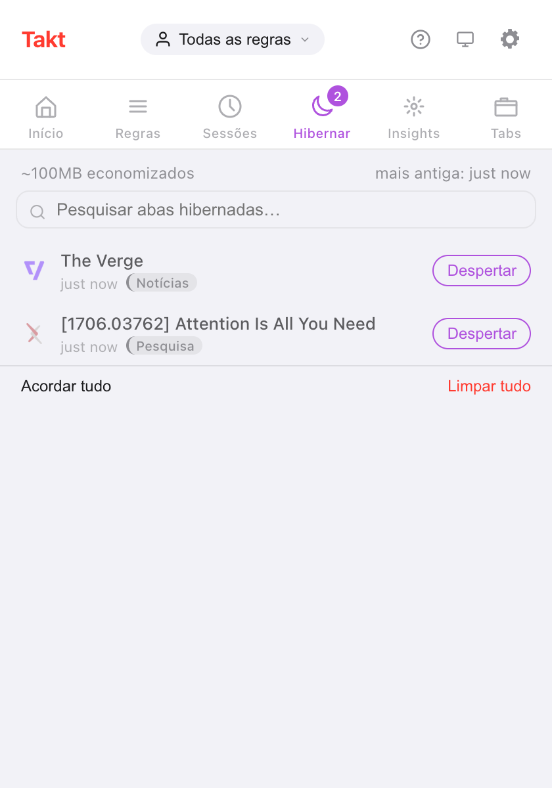

Resposta curta: o Takt cuida das abas ociosas em duas etapas. Suspender descarrega a aba, mas a deixa na barra de abas. Hibernar fecha a aba e salva o estado dela, para que um clique a traga de volta.
- Free: suspensão automática depois de 15 minutos a 4 horas de inatividade, uma lista de abas que nunca são suspensas e hibernação manual de até 5 abas.
- Premium: hibernação automática por tempo de inatividade, por número de abas na janela ou quando um agendamento termina, e até 200 abas hibernadas.
- Tudo fica no seu dispositivo. Sem conta, sem analytics.
Qual a diferença entre suspender e hibernar uma aba?
As duas liberam memória. A diferença está em para onde a aba vai.
| Suspensa | Hibernada | |
|---|---|---|
| Barra de abas | Continua lá, em cinza | Sai dela e aparece no painel Hibernar do Takt |
| Como | Descarte de abas do próprio Chrome | Aba fechada, estado salvo pelo Takt |
| Como volta | Clique na aba; a página recarrega | Clique em Despertar; a aba reabre onde estava |
| Manual | Recomendações de suspensão (painel Premium) | Gratuito, até 5 abas |
| Automático | Gratuito | Premium |
Como hiberno uma aba manualmente?
- Instale o Takt pela Chrome Web Store.
- Na aba que você quer guardar, abra o popup do Takt e clique em Hibernar aba. Ou clique com o botão direito na página e escolha Hibernar esta aba.
- A aba se fecha, e o Chrome mostra uma notificação curta de "Aba hibernada".
- Para trazê-la de volta, abra o painel Hibernar do popup e clique em Despertar.
O Takt salva a URL, o título, o favicon, o nome e a cor do grupo, a janela, a posição na janela, o estado de fixação, a posição de rolagem e o horário em que você hibernou a aba. Despertar reabre a aba na mesma janela, na posição antiga, de volta ao grupo, rolada até onde você estava.
Se a mesma URL já estiver aberta, o Takt pergunta antes de despertar, para você não acabar com uma duplicata.

O número "~100MB economizados" é uma estimativa fixa: o Takt conta 50 MB por aba hibernada. Ele não mede as abas que fecha.
Como descarrego abas ociosas automaticamente?
A suspensão automática é gratuita e vem ativada. A cada 5 minutos, o Takt descarrega as abas que estão ociosas há mais tempo que o seu limite: 15 minutos, 30 minutos (o padrão), 1, 2 ou 4 horas. Defina em Opções → Settings → Tab Lifecycle.
Ociosa quer dizer o tempo desde que a aba esteve ativa ou terminou de carregar pela última vez. O Takt nunca suspende:
- a aba ativa, ou uma aba que ainda está carregando;
- abas reproduzindo áudio;
- abas fixadas;
- abas que correspondem à sua lista Never suspend these tabs.
A lista de abas que nunca são suspensas aceita um padrão por linha, com * como curinga. *://mail.google.com/* mantém o Gmail carregado. A lista também protege as abas de todos os gatilhos de hibernação automática descritos abaixo.

O Chrome pode hibernar abas automaticamente? Premium
Com o Premium, o Takt tem três gatilhos:
- Tempo de inatividade. Uma aba que já está suspensa e ociosa além do prazo definido é hibernada. Escolha de 5 minutos a 7 dias; o padrão é 2 dias.
- Limite de abas. Quando uma janela passa do seu limite (de 15 a 100 abas, padrão 30), o Takt hiberna as abas usadas há mais tempo até voltar ao limite. Feche uma aba e a última hibernada volta para aquela janela. Cada janela é contada separadamente.
- Fim do agendamento. Um agendamento de perfil pode hibernar todas as abas elegíveis quando o horário dele termina. Ative Hibernate tabs when schedule ends em Profiles.
Nos gatilhos de inatividade e de limite de abas, o Chrome mostra uma notificação com um botão Desfazer por 10 segundos. Depois disso, a aba continua esperando no painel Hibernar.
Isso é outro The Great Suspender?
Pergunta justa. Em 2021, o Google removeu o The Great Suspender depois que foi encontrado código malicioso numa versão lançada após a venda da extensão. Muita gente deixou de confiar em suspensores de abas desde então.
Veja o que o Takt faz de diferente, e o que você pode conferir:
- As abas suspensas mantêm a URL real. O Takt chama a função de descarte do próprio Chrome. Ele não troca sua página por uma página da extensão, então desinstalar o Takt deixa suas abas como estão.
- As abas hibernadas ficam no seu dispositivo. Os registros ficam no armazenamento local do Chrome. Eles só saem do seu computador se você mesmo configurar a sincronização com o Drive ou com uma pasta.
- Sem conta, sem analytics, sem telemetria. As permissões extras são opcionais e só são pedidas quando um recurso precisa delas. Veja como o Takt mantém os dados no seu computador.
Você continua tendo que confiar em quem publica as atualizações de qualquer extensão que instala. Leia as permissões que ela pede.
A Economia de memória do Chrome basta?
Muitas vezes, sim. Se você só quer que as abas em segundo plano parem de usar memória, a Economia de memória integrada ao Chrome não custa nada e não precisa de extensão.
Duas reclamações aparecem sempre: as abas recarregam quando você volta a elas, e algumas abas inativas nunca dormem. A etapa de suspensão do Takt tem a mesma primeira desvantagem. Uma aba suspensa recarrega quando você clica nela, porque é o mesmo tipo de descarte.
O que o Takt acrescenta é controle. Você escolhe o limite de inatividade, lista os sites que ele nunca pode tocar, e a hibernação tira as abas da barra por completo, mantendo um caminho de volta.
Quais são os limites?
| Free | Premium | |
|---|---|---|
| Suspensão automática e lista de abas que nunca são suspensas | Sim | Sim |
| Hibernação manual | Sim | Sim |
| Abas hibernadas ao mesmo tempo | 5 | 200 |
| Hibernação automática por inatividade, limite de abas ou agendamento | Não | Sim |
Abas fixadas e abas reproduzindo áudio não podem ser hibernadas. Quando você chega ao seu limite, o Takt se recusa a hibernar mais até você despertar ou limpar algumas.
Ponha uma aba para dormir. Desperte-a exatamente onde você parou.
Adicionar o Takt ao Chrome, grátisPerguntas frequentes
Qual a diferença entre suspender e hibernar uma aba?
Uma aba suspensa é descarregada, mas continua na barra de abas e recarrega ao clicar. Uma aba hibernada é fechada; o Takt salva o estado dela e a reabre quando você clica em Despertar.
Quantas abas posso hibernar de graça?
5 por vez no plano gratuito, 200 no Premium (US$ 3/mês ou US$ 30/ano). A suspensão automática não tem limite e é gratuita.
O Takt é outro The Great Suspender?
O Takt suspende com o descarte do próprio Chrome, então as abas mantêm a URL real. As abas hibernadas ficam no armazenamento local do seu dispositivo. Sem conta, sem analytics, sem telemetria.
As abas hibernadas sobrevivem a uma reinicialização do navegador?
Sim. Elas ficam gravadas em disco, não na memória. Ao iniciar, o Takt descarta qualquer registro cuja URL já esteja aberta de novo.